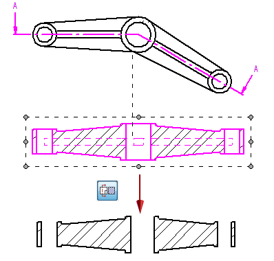
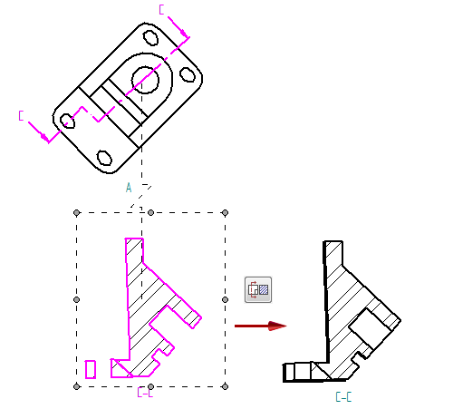

Change section view type
-
Select a simple section view, a thin-section view, or a revolved section view.
For examples of each type of section view, see Section View command (Draft environment).
When you select a section drawing view, the on or off states of the Section Only and Revolved Section View buttons on the command bar indicate how the section view was created. If neither of the buttons is on, then the view was created as a simple section view.
-
On the command bar, do any of the following:
To
Select this
Change a simple section view to a thin-section view, or change a thin-section view to a simple section view.
 Section Only
Section Only Change a simple section view to a revolved section view, or change a revolved section view to a simple section view.
Revolved Section View
The option that is available is based on the type of section view that you selected and the cutting plane line that was used to create it.
-
Right-click the drawing view and choose Update.
Selecting the Section Only button changes a simple section view to a thin-section view.

Deselecting the Section Only button changes a thin-section view to a simple section view.

How do I
Create a section viewCreate a revolved section view
Create a thin-section view
Scale a section view
Set rib hatching in section views
Show or hide cutting plane lines in section views
Learn more
Section viewsModifying section views
Section view and cutting plane captions
Formatting fill and hatch patterns in section views
Look up more details
Section View command (Draft environment)Section View command bar
Override Rib Hatching dialog box